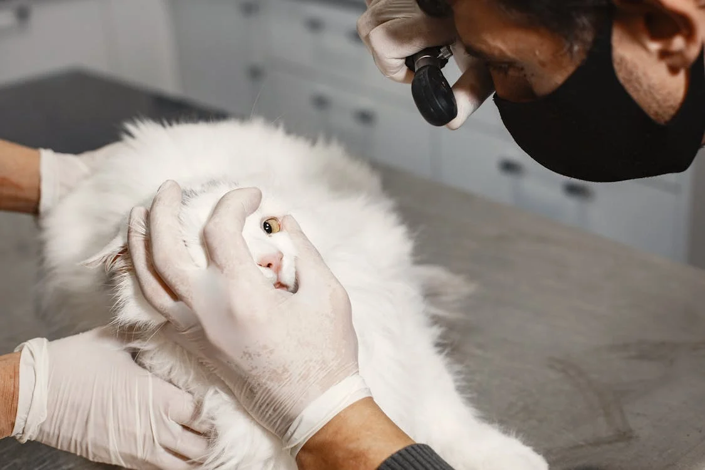

Clínica Veterinária PetCare |
Home |
Sobre Nós |
Contato |
|
|---|---|---|---|---|
|
Na Clínica Veterinária PetCare, nossa missão é proporcionar a melhor qualidade de vida para os animais de estimação e tranquilidade para seus tutores. Com anos de experiência e uma equipe de profissionais altamente capacitados, nos dedicamos a oferecer um atendimento completo, que abrange desde consultas de rotina até procedimentos cirúrgicos complexos. |
 | |||
A Clínica Veterinária PetCare foi fundada com o bjetivo de oferecer um atendimento veterinário de excelência em um ambiente acolhedor. Desde a nossa inauguração, crescemos e nos tornamos referência na região, sempre mantendo o compromisso com o bem-estar animal e a inovação em nossos serviços. |
Valores:Amor pelos animais: Cada paciente é tratado com carinho e respeito, como se fosse parte de nossa própria família. Ética e profissionalismo: Agimos com integridade e transparência em todas as nossas ações. Inovação constante: Estamos sempre atualizados com as mais recentes tecnologias e práticas veterinárias para oferecer o melhor atendimento. Compromisso com o bem-estar animal: Nossa prioridade é a saúde e felicidade dos animais que cuidamos. |
|||
|
||||
| Rodapé |
Home |
Sobre |
contato |
|